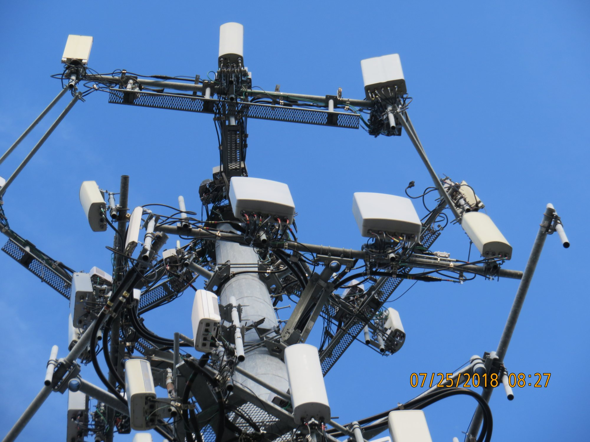
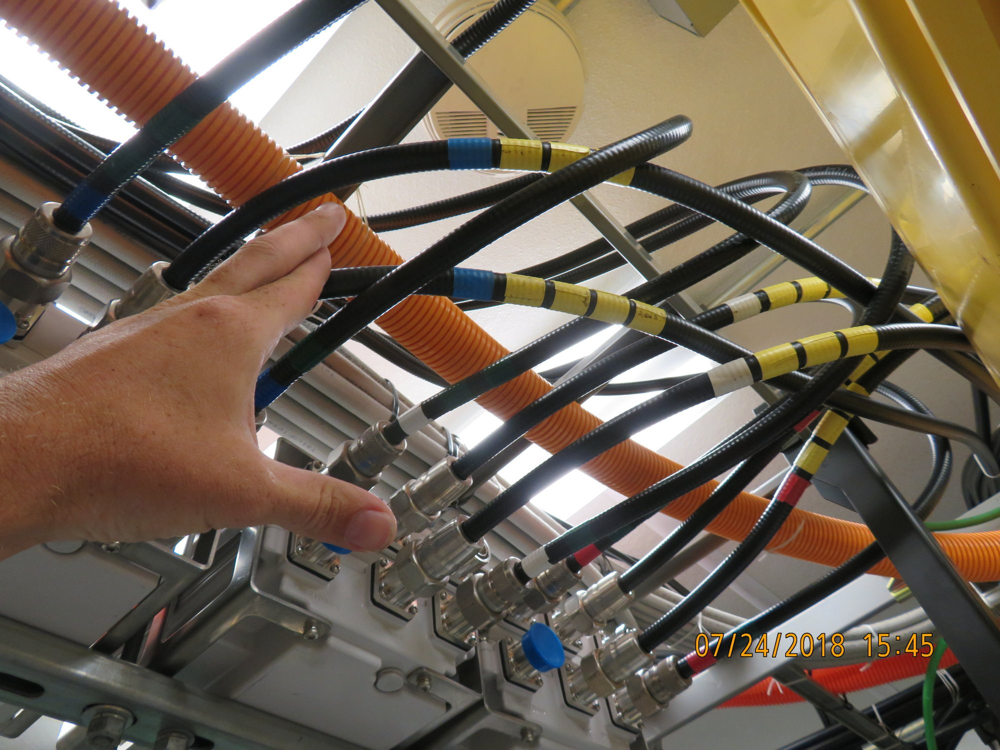
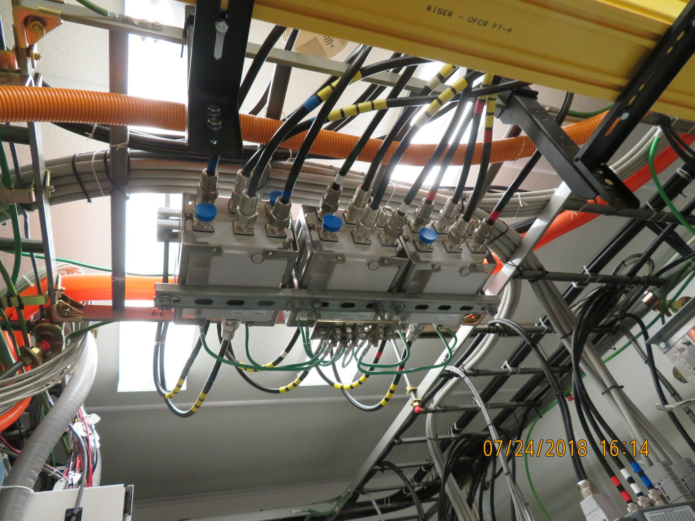
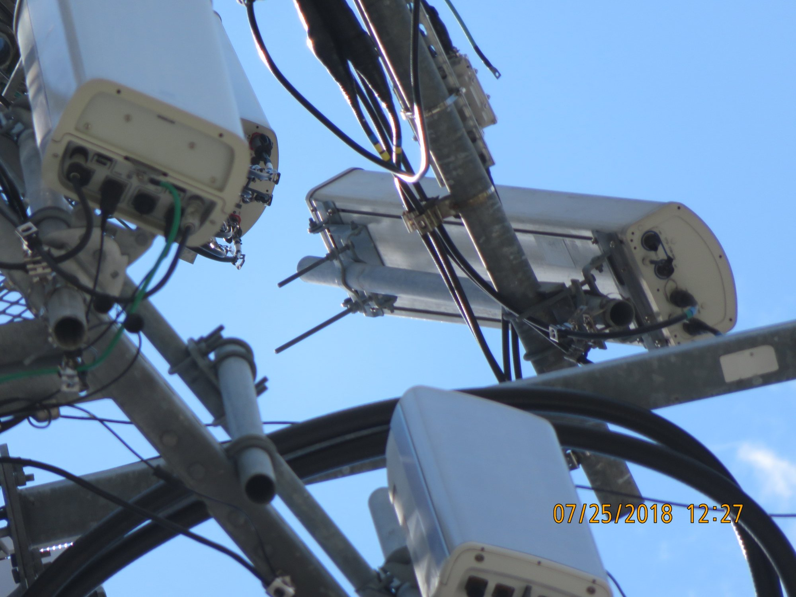
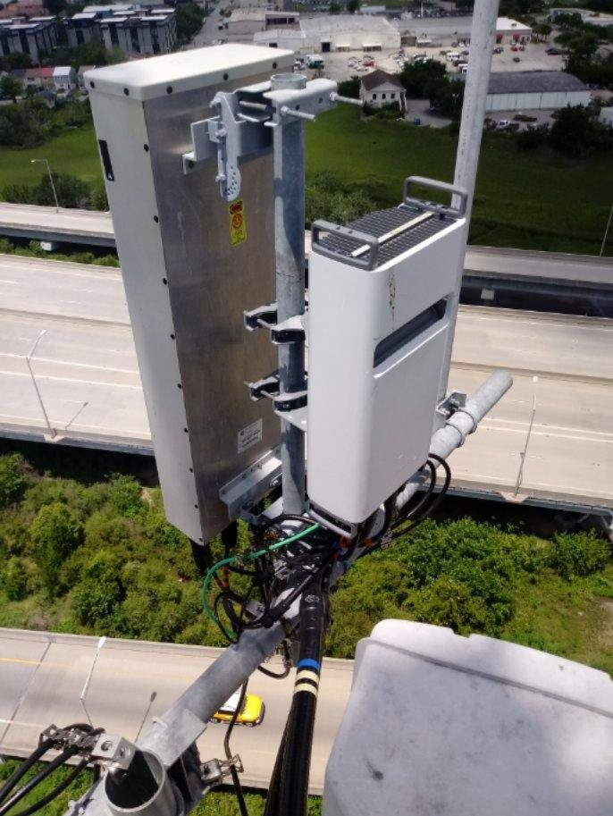
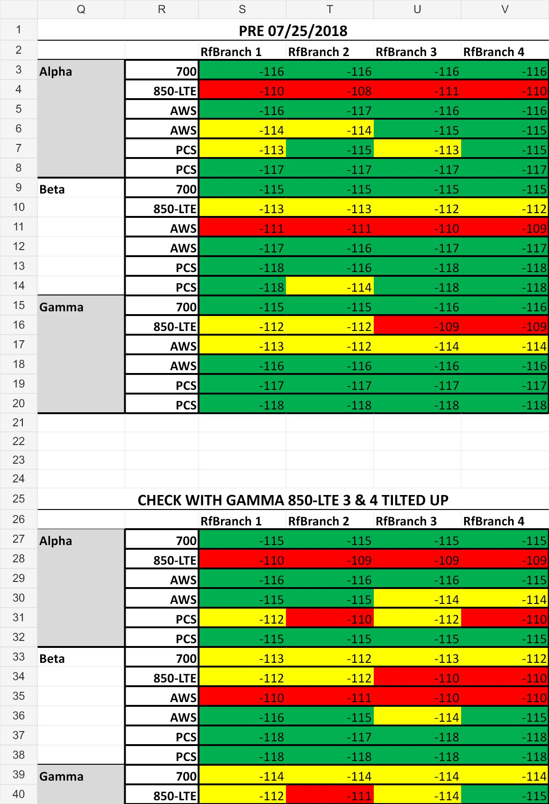

Clear the local faults first
On July 24, I cleared an AWS Raycap alarm caused by an incorrectly bent top-Raycap clip. I used VSWR checks and controlled disconnections at the bottom hardlines to trace the 700/850 paths. This found crossed Alpha 700/850 secondary lines and crossed Gamma 700 secondary lines at the triplexers. I corrected those paths before evaluating the remaining interference.


Use an orientation check to isolate the remaining problem
- Track how the readings changed. The July 24 update records PIM that shifted during the day across sectors and technologies, with Gamma 850 secondary producing the worst readings. That variability did not behave like one fixed failed component.
- Fix the remaining local jumper problem. On July 25, I corrected Beta PCS branch 2 PIM by securing a loose jumper at the radio.
- Change only the antenna orientation. I had the tower crew tilt the Gamma G1 850 antenna upward while I compared the four branch readings from the ground.
- Compare the same branches right away. Gamma 850 branch 3 changed from a recorded -109 to -114 and branch 4 from -109 to -115 in the documented comparison—5 and 6 dB more negative within roughly 15 minutes.
- Recommend performance-team follow-up. Because the symptom changed with orientation and time, I recommended that the carrier's performance team locate the external emitter rather than replacing another antenna or feeder component.


The branch comparison
The worksheet below comes directly from my July 25 PIM comparison. It shows the full Alpha, Beta, and Gamma results, including the targeted change on Gamma 850 branches 3 and 4.
| Condition | Branch 1 | Branch 2 | Branch 3 | Branch 4 |
|---|---|---|---|---|
| Pre · July 25 | -112 | -112 | -109 | -109 |
| G1 antenna tilted up | -112 | -111 | -114 | -115 |
| Change | 0 dB | 1 dB | 5 dB | 6 dB |

What the test showed—and what it did not
The reading change pointed to external interference, but it did not identify the source. The site update mentions the elevated roadway in the Gamma direction as one possibility, not a confirmed cause. I documented the surrounding RF environment and recommended that the performance team continue the source-location work.